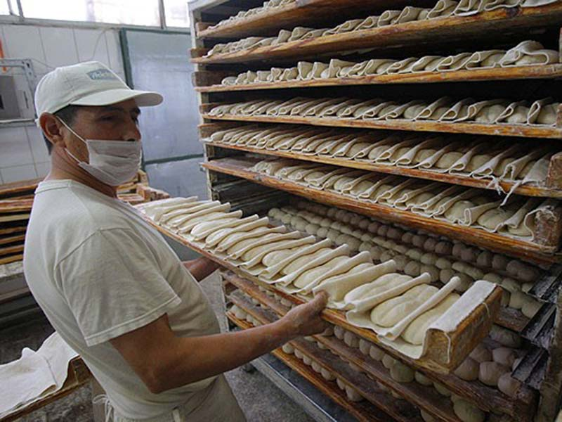
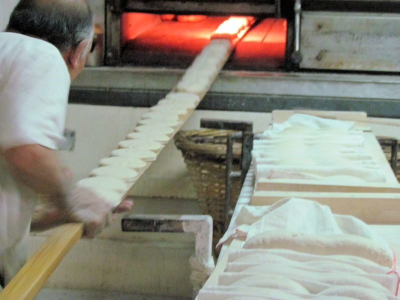

Las Marraquetas
-

- 
- 
Las Marraquetas
Yo no he viajado a Europa donde la tradición panadera es antigua y exquisita. Hoy en día existe la posibilidad de probar panes italianos y franceses por esto de la globalización, pero sin duda eso no alcanza más que para entender un formato de pan, más no el alma de un pan o masita.
Según cuenta el mito popular existía en Valparaíso una persona de apellido Marraquette, que en realidad sonaba más a marraquesh, llegó al puerto donde se instaló con su negocio de panadería. La clientela comenzó a nombrar marraquette al pan del panadero y desde ahí el nombre del pan.
Las señoritas marraquetas consisten en una masa con agua, levadura, y un poco de sal. No contienen materias grasas de ningún tipo, y tampoco cuenta con aceite, grasa de cerdo, margarina hidrogenada.
Se pone harina en una maquina grande y se airea la harina de a poco se incorpora levadura agua y sal.
Se deja batir bastante tiempo hasta, dicen los panaderos, desarrollar la malla; por cierto es una masa bien pegajosa, y blandengue.
Se retira se deja reposar unos minutos, y luego se procede a ovillar esa sí que es una gran técnica, y solo depende de la práctica.
Ovillar consiste en formar bolitas tan compactada que la masa que no quede ni arruga, ni espacio para, que esa masa sea una sola.
Hoy en día existen máquinas ovilladoras, pero nada reemplaza la mano y su entrega de energía.
Luego de este proceso se unen dos bolitas, y no cuatro como se explica por ahí en un sitio de información en el espacio virtual.
Después viene el paso con un palo de madera, del diámetro del mango de una cuchara de palo; se divide sin llegar a partir la masa por la mitad; este matrimonio, quedando cuatro integrantes unidos entre sí.
Pasado este paso y sobre unas tablas con bordes, se tienen unos paños largos y blancos como los sacos antiguos de algodón 100% y no como hoy 100% poliéster; estas especies de sábanas angostas están bien enharinadas y sobre ella se ponen este matrimonio con hijos de bolitas de masa ovilladas.
Una vez puestas ahí se hace una especie de pirca de género para hacer una frontera entre las familias de masa.
Pasan a un descanso caribeños, con eso me refiero que en una panadería se ponen en una cámara fermentadora, pero la idea de esto es dejarlas doblar su volumen en un medio cálido y húmedo para que la corteza no se reseque.
Una vez terminado este tiempo, tomamos con suma delicadeza como a mujer embarazada las marraquetas Para esto se toma la pestaña del paño y se lanzan en un acto lento, amoroso, y suave, el pan sobre nuestra mano, para pasarla en un acto ahora suicida al remo, (utensilio panadera que consiste en una madera muy lijada suave en forma de remos gigante). Una vez lleno, el remo pasamos al paso más importante de un pan según mi apreciación, aunque cada etapa es vital; para el horno hay que tener valor, habilidad, paciencia, buena nariz, y amorrr maternal de ese bien paciente y nunca abandonar al hijo.
Tomamos el remo lleno con pachorra, harto musculo y lo apoyamos en el horno que empotrado en la pared, con piso de loza, porque es ahí donde se hacen las reales marraquetas, en el piso del horno, sobre esa lozas en algunos casos, ladrillos grandes radiantes en otras, y con un movimiento certero, casi el de una estocada se dejan las marraquetas tal cual estaban en el remo pero en su lugar de cocción.
Ahora se habla, de hornos con vapor, de bandejas pero esa no es la verdadera marraqueta, crocante, un poco empolvada de harina, con miga suave y esponjosa.
Hoy en día en los súper hay marraquetas bien brillantes, cuya espalda está llena de hoyitos por las famosas bandejas que en algunos casos no limpian bien y sale una especie de residuo quemado pero en fin, cuan están tibian son algo crocantes pero pasado este tiempo se transforman en un chicle.
No olvidemos aquellas tardes cuando uno estaba atento a la compra del pan en el negocio del barrio, y había fila para recoger el pan, y caminando de vuelta a casa, sacarle un trocito calientito a la deliciosa marraqueta que había en el surtido de pan, entre hallullas, marraquetas y otros.
Aún en algunos almacenes de barrios llegan marraquetas reales, recuerdo los veranos con un tomatito picado, quesito de cabra, ají verde y sopear con la bella marraqueta.